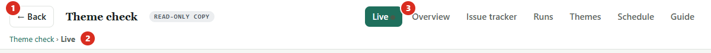
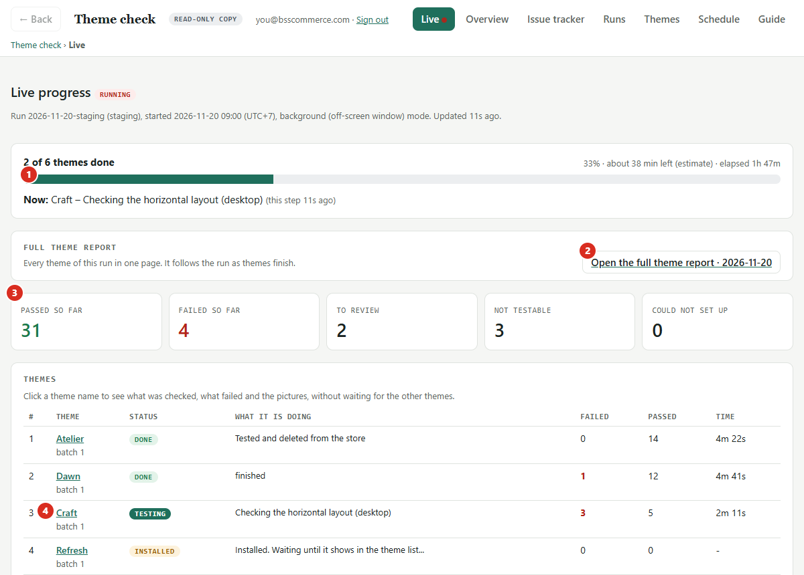

Theme check: user guide
What it is, and how to use it. About 5 minutes to read.
What this tool does
It takes Shopify themes one by one, puts Findter on each, checks that everything looks and works right, and shows you what passes and what fails, with a picture for every check.
- Open it: bss-theme-check.pages.dev. Sign in with your @bsscommerce.com Google account.
- Everyone in the company can look. Only the editors can change things (marked editors only below).
- All times are UTC+7.
1The pages

| Live | The run happening now, theme by theme. |
| Overview | The numbers of the latest run: how many fail, the worst themes, the most common problems. |
| Issue tracker | Every problem seen so far: still open or fixed, and since when. |
| Runs | Every past run. Open any theme of any run. |
| Run test | Pick some themes, a store and a browser, and test them now. |
| Themes | The list of themes to test. |
| Schedule | When the test runs by itself. |
2Watch a run: Live

What the status words mean:
| QUEUED | Waiting for its turn. |
| INSTALLING / INSTALLED | Being added to the store. The tool waits until the theme shows in the theme list and its editor opens. |
| SETUP | Editor open: turning Findter on, choosing the theme. |
| TESTING | Checking the pages. |
| DONE FAILED | Finished. FAILED means the theme could not be set up (it says why). |
The Time column counts only from the moment the theme editor opens. Installing and waiting are not counted.
3Look inside one theme, and correct a result
On Live, click a theme name. A panel opens on the right. You do not need to wait for the other themes.

- Read What was found and look at the picture. Failed checks come first.
- If the tool is wrong, or the problem is too small to matter, tick one box: Skip (ignore it), Pass, Review (someone must look), or Fail.
- Done. The numbers change at once. The report, the Overview and the Issue tracker follow in about a minute.
- Untick the box to go back to what the tool found. The tool's own answer is never lost: the row still says script said: FAIL.
- To mark a check that passed as a Fail (you checked by hand), tick Also show the passed checks first.
- Editors only. Everyone else sees the boxes greyed out.
4Reports

- Full theme report: all themes of a run in one page. Button on Live, or Runs → full report. Click a theme name in it to open that theme's own report.
- Report of this theme: only that theme. Find it at the bottom of the theme panel.
5Old runs

6Themes and schedule (editors only)

- Themes tab: add a theme, remove one, or switch one off. Press Save.
- Schedule tab: daily, weekly, or every N days. Press Save schedule.
- After Save the tool updates the test PC, the Windows timer, the website and GitHub by itself. Each step shows OK or failed.
The test PC must be on at the scheduled time. The tool needs a real Chrome window and a saved Shopify login, so it cannot run in the cloud.
7Test a few themes yourself (editors only)
- Open Run test.
- Pick the store and the browser (Chrome or Edge).
- Tick the themes. Type in Find a theme to filter, Select all shown to tick the filtered ones, Clear to start over.
- Press Run test. It starts on the test PC in its own browser. The Requests list below shows its state, and Live shows it theme by theme.
One run per store at a time. A test for a store that is busy is queued and starts by itself when the run there ends: nothing running is ever stopped. Runs in different stores go on at the same time. You can Cancel a request that has not started.
A store and browser must have been logged in once on the test PC. If not, the request is rejected and tells you the command to run.
8What the tool does to each theme
- Install the theme (one at a time) and wait until it shows in the theme list and its editor opens.
- Open the editor: turn Findter on, choose the theme.
- Vertical layout, plus Search on desktop and mobile: check.
- Switch to Horizontal: check. Open the Price filter and look at its slider.
- Switch to Off-canvas, and Mobile: check.
- Delete the theme. Then the next one.
The layout is a store-wide setting, so the tool does not reset it after every theme: one theme goes Vertical, Horizontal, Off-canvas, the next starts where that ended and goes back. The layout is put back to Vertical when the run ends. The live theme of the store is never deleted. If it is on the list, it is tested where it is.
9Bảng mã test và lỗi (để tra cứu)
Mỗi dòng trong báo cáo có một mã test (ví dụ V-10) và một câu "What was found" (tool đã thấy gì). Phần này giải thích mã đó đang kiểm tra phần nào, và từng câu lỗi nghĩa là gì. Các câu lỗi để nguyên tiếng Anh, đúng như tool hiển thị, để bạn tìm theo chữ.
1. Cách đọc mã
| P- | Panel: bảng "Compatibility issue detected" trong theme editor (chỉ 1 mã: P-01). |
| V- | Bộ lọc trên desktop. Chạy ở cả 3 layout: Vertical, Horizontal, Off-canvas. |
| O- | Chỉ ở layout Off-canvas (drawer bên phải). |
| M- | Mobile (màn hình 390px, luôn là drawer). |
| S- | Search (ô tìm kiếm và widget gợi ý) trên desktop. S-M = search trên mobile. |
| G- | General: kiểm tra chung, chạy ở mọi layout và mobile. |
Trong báo cáo, mỗi mã được ghi kèm layout/viewport nó chạy (ví dụ vertical / desktop). Cùng một mã V-xx có thể đạt ở layout này nhưng lỗi ở layout khác.
2. Trạng thái và mức độ
| PASS | Đạt. |
| FAIL | Lỗi. "What was found" nói rõ lỗi gì; ảnh chụp đúng lúc đó. |
| REVIEW | Tool không tự quyết được, chỉ chụp ảnh. Người xem phải nhìn ảnh rồi tự tick Pass hoặc Fail (ví dụ S-05; V-04 khi tool không thấy đủ 2 chấm). |
| NA | Không áp dụng: collection này không có phần tử đó (ví dụ không có nhóm gộp, không có thẻ "Choose options"). Không phải lỗi. |
| SKIP | Bạn tự đánh "Skip" ở cột Your verdict. Tính như NA. |
| ERROR | Chính tool bị lỗi khi đo (ví dụ "Pass crashed: ..."). Tính là lỗi; báo developer. |
Mức độ: critical chặn dùng (khách không dùng được tính năng) · major lỗi giao diện rõ · minor lỗi nhỏ. Ngưỡng đang dùng: căn dòng lệch tối đa 3px; độ tương phản chữ tối thiểu 3:1; widget search lệch độ rộng tối đa 10%, cách ô search tối đa 12px; chấm slider lệch tối đa 2.5px.
3. Từng mã test
| Mã | Mức | Kiểm tra phần nào | Các câu lỗi và nghĩa của chúng |
|---|---|---|---|
| P: bảng trong theme editor | |||
| P-01 | major | Nút X của bảng "Compatibility issue detected" (bật core embed, chưa chọn theme): thấy được, kích thước bình thường, cùng dòng với tiêu đề. |
Close (X) button is not visible on the panel: không thấy nút X. X is too big / too small (WxH px): X quá to / quá nhỏ. X sits outside the panel: X nằm ngoài bảng. X is Npx off the title line: X lệch khỏi dòng tiêu đề N px. X icon is off-centre in its box: icon X lệch tâm trong ô của nó. NA: bảng không hiện (theme đã được chọn). |
| V: bộ lọc desktop (Vertical, Horizontal, Off-canvas) | |||
| V-01 | major | 2 ô tìm kiếm Search in this collectionvà Search filter value: icon kính lúp hiện đủ, không đè lên chữ placeholder. |
no magnifier icon: thiếu icon. icon is tiny: icon quá nhỏ. icon touches or overlaps the text (gap Npx): icon chạm/đè chữ. icon is cropped on the left/right: icon bị cắt một bên. placeholder is cut (Wpx of text in Hpx): chữ placeholder bị cắt. |
| V-02 | major | Tên giá trị và số đếm (ví dụ "Size 10 (1)") nằm cùng một dòng. |
count is on the next line: số đếm bị rớt xuống dòng. count is Npx above/below the value: số đếm lệch dòng N px. Câu đầu cho biết "N of M counts misaligned" và tên nhóm (Size, Product category, Tag 1...). |
| V-03 | major | Rê chuột vào một giá trị: số đếm vẫn đọc được (không bị đen trên nền đen). |
Count colour ... on hover: contrast N:1 (needs 3:1): màu số đếm quá gần màu nền khi hover. |
| V-04 | minor | Slider Price: 2 chấm tròn nằm đúng giữa đường kẻ. Tool tự mở filter Price rồi đo từ ảnh chụp. |
A dot is Npx away from the middle of the line (limit 2.5px): chấm lệch N px. REVIEW ...slider did not open / its line was not found / could not see both dots. Look at the picture: tool không đo được, hãy nhìn ảnh rồi tự đánh. NA: không có filter Price dạng slider. |
| V-05 | major | Mũi tên mở/đóng của nhóm gộp (ví dụ "Tag 1"): thấy được, cùng dòng với checkbox và tên; bấm thì mở/đóng. |
the arrow icon does not show: không thấy mũi tên. the arrow is the same colour as its button, so it cannot be seen: mũi tên trùng màu nút. the arrow button is oversized: nút mũi tên quá to. the arrow / the checkbox is not on the same line as the name (wrapped): bị rớt dòng. Clicking the arrow did not expand or collapse the group: bấm không xổ/thu được. NA: không có nhóm gộp, hoặc nhóm đang thu gọn nên không đo được. |
| V-06 | major | Nút cuộn lên đầu trang: tool cuộn nhanh xuống cuối trang; nút tròn của Findter phải hiện, có mũi tên, và nút của theme không hiện cùng lúc. |
Findter's scroll-to-top button is not visible after scrolling: nút không hiện. Findter button shows only the circle, with no arrow inside: chỉ có vòng tròn, thiếu mũi tên. the arrow is the same colour as the circle/ Findter button is tiny. the theme's own scroll-to-top button shows at the same time: nút của theme hiện cùng lúc (2 nút). |
| V-07 | major | Checkbox của filter dạng Checklist (ví dụ Product category): ô vuông, cùng dòng với tên và số đếm. |
checkbox is WxHpx (not square): ô không vuông. count is off the name's line/ checkbox is off the name's line: lệch dòng. |
| V-08 | major | Thanh trên lưới sản phẩm: Filter by, Sort by và dropdown sort thẳng hàng, không đè nhau. |
'Sort by' label is missing/ sort dropdown is missing: thiếu nhãn / thiếu dropdown. Sort label is Npx off the dropdown line/ Filter by and Sort by are not on one line: lệch dòng. sort dropdown overlaps another toolbar element: dropdown đè lên phần tử khác. |
| V-09 | major | Panel "Choose options" trên thẻ sản phẩm: các lựa chọn (pill, swatch) căn giữa; nút Add to cart / View full detail nằm trong thẻ; panel không trong suốt. Chỉ đo nút thật (có viền hoặc nền), không đo dòng chữ mô tả như "Title: Sample Selling Plans". |
"Add to cart" button spills Npx outside the card: nút tràn ra ngoài thẻ N px. option "10": the text is Npx off-centre sideways / vertically: chữ trong lựa chọn lệch tâm. options panel is see-through (opacity N): panel bị trong suốt. NA: collection không có thẻ "Choose options". |
| V-10 | critical | Giá trị được chọn trông như đã chọn: tool bấm 1 giá trị ở từng loại filter (Checklist, Box, Merged) rồi so ảnh trước và sau; ô phải đổi màu hoặc hiện dấu tick. |
"X": the click did not select the value: bấm nhưng không chọn được. "X" was selected but looks the same as before (only 0.0% of its pixels changed): no dark fill or tick: đã chọn nhưng hình y hệt lúc chưa chọn, không có nền tối hay dấu tick. Xem 2 ảnh before / after trước khi kết luận. |
| V-11 | major | Chip "Option: value" sau khi chọn: chữ căn giữa, 1 dòng, có icon X. |
chip "..." : parts are Npx apart vertically/ text is off the chip's centre: lệch dòng/tâm. chip "..." : no X icon: thiếu icon X. |
| V-12 | major | Icon của app (mũi tên dropdown, kính lúp, X, mũi tên cuộn) hiển thị bình thường: không bị phóng to, méo hay thành khối đen. |
"icon" is enlarged (WxHpx, it should be 6 to 40px): icon quá to. is almost invisible(dưới 6px) · is stretched(méo) · is empty (the icon has no shape)· has no fill and no line, so it cannot be seen. Icon nhỏ như mũi tên 8x5px là bình thường, không bị tính là lỗi. |
| O: layout Off-canvas (drawer) | |||
| O-01 | major | Nút "Filter by": thấy được, icon thẳng hàng với chữ. |
'Filter by' button is not visible· icon is missing· icon is Npx off the text. |
| O-02 | critical | Bấm Filter by: drawer bên phải mở ra và có các filter. |
Drawer did not open or shows no filter options: drawer không mở hoặc rỗng. |
| O-03 | major | Nút X đóng drawer: có, kích thước bình thường, icon ở giữa ô. |
Drawer close (X) button is not visible· X box is too big / too small· X icon does not show inside its box· X icon is off-centre in its box (dx, dy)· X icon is bigger than its box· X button is partly off-screen. |
| O-04 | major | Price From / To trong drawer hiện đủ, không bị cắt thành "...". |
price field is cut: "..." does not fit· label "..." is cut· label "..." overlaps its field· 'From' / 'To' text is not shown. |
| M: Mobile | |||
| M-01 | critical | Nút "Filter and sort" của Findter hiện, nút Filter/Sort của theme không hiện bên cạnh. |
Findter's 'Filter and sort' button is not visible on mobile: nút Findter không hiện. the theme's own Filter/Sort control is shown next to Findter's: theme hiện nút của nó cùng lúc. |
| M-02 | major | Drawer mobile: mở được, nút X đúng chỗ, chữ trong Sort options căn trái. |
Các câu của O-02 và O-03 (drawer không mở, X lệch...).
N sort option(s) are aligned to the right, leaving a gap on the left: chữ Sort căn phải, chừa khoảng trống bên trái. |
| M-03 | major | Price From / To trong drawer mobile hiện đủ. | Giống O-04. |
| M-04 | major | Panel "Choose options" trên mobile: giống V-09; thẻ không quá sát nhau, không tràn sang thẻ bên cạnh. | Giống V-09. |
| S: Search (desktop; S-M là mobile) | |||
| S-01 | critical | Gõ "3" vào ô tìm kiếm của theme: widget gợi ý của Findter hiện, có chữ "Powered by Findter". |
Findter's widget shows but the 'Powered by Findter' watermark is missing: widget có nhưng thiếu watermark. ...attached to a hidden copy of the theme's search form...: widget gắn vào một bản sao ẩn của form search nên khách không thấy. ...embed is on but its widget did not appear: embed đã bật nhưng widget không hiện. ...Search suggestion embed is not active on this theme (its files are not on the page): embed Search suggestion chưa bật. |
| S-02 | critical | Ô tìm kiếm của theme vẫn dùng được (hiện và gõ được). |
Search bar is not visible or cannot take text. Could not find the theme's search icon, so search could not be opened: không mở được search; câu này làm mọi mã S cùng lỗi. |
| S-03 | major | Chỉ có một hộp gợi ý: widget Findter và hộp gợi ý của theme không hiện cùng lúc. |
Findter's widget and the theme's own suggestion box are shown together: hiện 2 hộp cùng lúc. Only the theme's own suggestion box is shown.../ Only the theme's own search layout is shown (Findter's is not): chỉ thấy của theme. NA Nothing to compare: Findter widget is not showing. |
| S-04 | major | Widget cùng độ rộng với ô search, ngay dưới ô, không bị che, không lệch ngang. |
widget is Wpx wide, search bar Hpx (N% different): lệch độ rộng quá 10%. widget starts Npx below the search bar/ widget overlaps the search bar by Npx: hở/đè lên ô search. widget is covered by another element (for example the header): bị header che. widget is shifted Npx sideways from the bar: lệch ngang quá 12px. |
| S-05 | major | Widget đứng yên, không tràn ra trang hoặc biến mất khi cuộn. |
Luôn là REVIEW: Look at the picture: widget stays put and does not expand over the page. Bạn nhìn ảnh rồi tự đánh Pass hoặc Fail. |
| S-M1 | critical | Mobile: template search của Findter hiện, có "Powered by Findter" ở cuối. | Giống S-01. |
| S-M2 | major | Mobile: chỉ có một layout search (của theme không hiện cùng hoặc thay cho Findter). | Giống S-03. |
| S-M3 | major | Mobile: mũi tên quay lại (←) cạnh ô search; bấm thì về trang, không hiện ô search thứ hai. |
No back arrow ('←') next to Findter's search bar: không thấy mũi tên. After tapping the back arrow a second search bar (the theme's) appeared: bấm xong lại hiện ô search của theme. |
| S-M4 | critical | Mobile: ô search dùng được (hiện và gõ được). | Giống S-02. |
| G: kiểm tra chung (mọi layout và mobile) | |||
| G-01 | critical | Findter chạy và có sản phẩm: có khung Findter, thẻ sản phẩm có ảnh và giá, không ảnh lỗi. |
Findter container (#fdt-container) is not on the page: Findter không vẽ gì trên trang. no product cards are visible· collection has no products to show (no data)(collection trống, không phải lỗi của app). no card has an image· N broken image(s)· no card shows a price. Pass crashed: ...(ERROR): tool bị lỗi khi chạy phần này, báo developer. |
| G-02 | major | Không cuộn ngang trang. |
page scrolls sideways (Wpx wide in a Hpx window): trang rộng hơn màn hình. |
| G-03 | major | Không có lỗi Findter: không có lỗi JavaScript và không có request Findter bị lỗi (HTTP 400 trở lên). |
Liệt kê tối đa 4 lỗi: lỗi console, lỗi trang, hoặc 404 https://...(request nào bị lỗi). |
| G-04 | critical | Layout trên màn hình đúng với layout đã đặt ở trang thiết kế của Findter. Nếu sai, các kết quả khác của layout đó không có ý nghĩa. |
expected the horizontal layout but the page shows: vertical. Check Tab 1 (Filter layout saved?) and reload: layout chưa được áp dụng (Save không ăn, hoặc storefront chưa cập nhật). Tool đã tự đợi và tải lại vài lần (khoảng 16 giây) trước khi báo lỗi này. |
| G-05 | critical | Storefront mở được, không bị trang mật khẩu của cửa hàng. |
The storefront shows the store password page and no storefront password is configured· ...the password page is still showing (wrong password?): theme bị dừng, chỉ có đúng 1 lỗi này. |
4. Khi cả theme không test được (lỗi setup)
Lúc này Live báo theme FAILED và báo cáo chỉ có một lỗi (không có V-, S-... của theme đó). Đây là lý do (reason):
not_in_theme_store | Tên theme không có trong Shopify Theme Store. Sửa tên trong tab Themes. |
library_full | Kho theme của store đã đầy (tối đa 20 theme). |
install_timeout · install_error · installed_but_not_found | Cài theme quá lâu / Shopify báo lỗi khi cài / cài xong nhưng không thấy trong danh sách. |
not_listed · editor_not_ready | Đợi tối đa 10 phút mà theme không hiện trong danh sách, hoặc editor của nó không mở được. |
theme_is_live | Theme đang là theme live của store. Tool dừng để không đổi cài đặt trên theme đang bán. |
not_in_findter_theme_list | Danh sách Theme list của Findter không có theme này (app chưa hỗ trợ). |
save_not_persisted | Đã bấm Save nhưng tải lại editor thì core hoặc Search suggestion vẫn OFF. |
findter_not_on_storefront | Setup xong nhưng storefront không có Findter (#fdt-container). Tool thử /collections/all rồi các collection trong menu. Nếu chỉ /collections/all không có Findter, tool chạy test trên một collection thật và ghi chú lại. |
storefront_blocked | Gặp trang mật khẩu hoặc bị chặn khi mở storefront (xem G-05). |
theme_run_failed | Lỗi bất ngờ giữa chừng; phần chi tiết ghi lỗi cụ thể. |
theme_not_on_page | Khi xóa theme: không thấy theme trên trang. Không ảnh hưởng kết quả; tool xóa lại ở cuối lần chạy. |
5. Đọc kết quả cho đúng
- Xem ảnh trước khi kết luận. Mỗi lỗi có ảnh chụp đúng lúc đo; bấm vào ảnh để phóng to.
- Cùng một mã, cùng một câu lỗi ở mọi theme thường là do app Findter hoặc do cách tool đo, không phải do theme. Ví dụ đã thấy ở mọi theme: P-01
X is 141px off the title line
, V-043px
(sát ngưỡng 2.5px), V-100.0% of its pixels changed
. Hãy xem ảnh rồi tự đánh Pass/Fail; nếu tool đo sai, báo developer để chỉnh. - Lỗi chỉ ở một theme thường là do theme (ví dụ V-09 nút tràn khỏi thẻ, S-03 hai hộp gợi ý, V-06 hai nút cuộn lên).
- NA không phải lỗi: chỉ có nghĩa là collection thử nghiệm không có phần tử đó.
- Đã xem và thấy tool đánh sai? Tick verdict của bạn (bước 3): kết quả của tool vẫn được giữ, báo cáo và số liệu theo verdict của bạn.
If something looks wrong
- A result looks wrong: tick your verdict (step 3), then tell the developer which check and what you saw.
- The page says "stopped unexpectedly" or the run does not move: the test PC or the run stopped. Tell the developer.
- The boxes are greyed out: your account is not an editor.
- Lost? Press Back, or open any page from the menu.